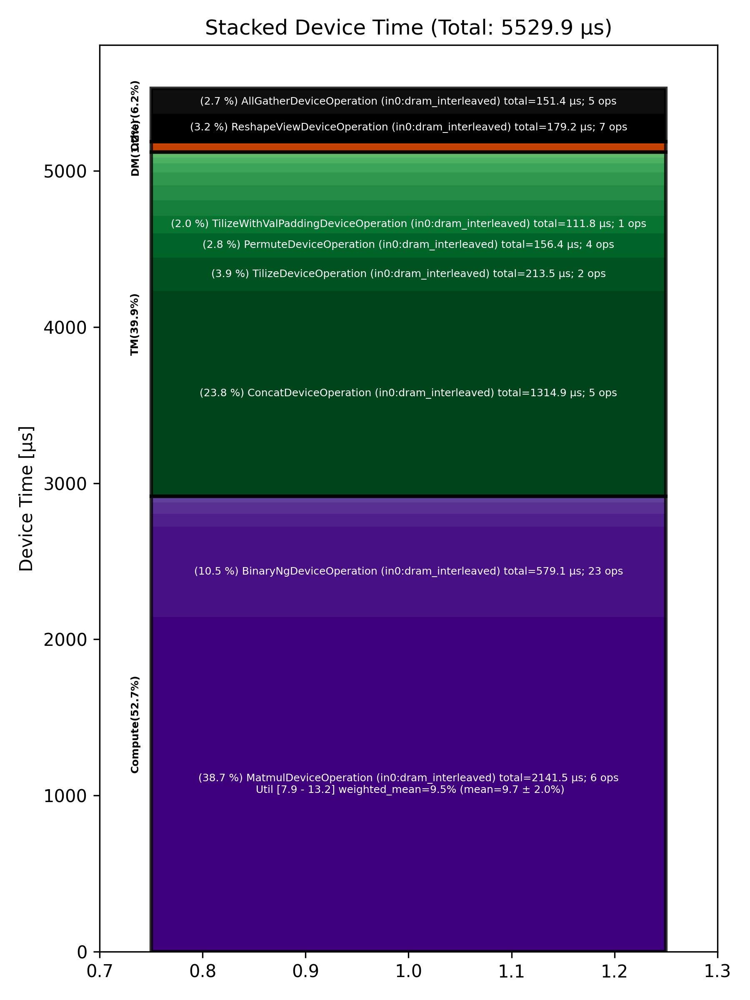

🚀 Performance Report 🚀 ======================== ID Total % Bound OP Code Device Device Time Op-to-Op Gap Cores DRAM DRAM % FLOPs FLOPs % Math Fidelity ----------------------------------------------------------------------------------------------------------------------------------------------------------------------- 22 0.3 % TypecastDeviceOperation 15 57 μs 72 BF16 => FP32 51 1.4 % UnaryDeviceOperation 21 70 μs 195 μs 72 FP32 => FP32 67 0.5 % FillPadDeviceOperation 25 80 μs 19 μs 64 FP32 => FP32 98 1.5 % ReduceDeviceOperation 24 35 μs 243 μs 64 FP32 => FP32 138 0.4 % ReshapeViewDeviceOperation 28 24 μs 55 μs 2 FP32 => FP32 177 2.1 % AllGatherDeviceOperation 0 18 μs 378 μs 8 FP32 => FP32 214 0.6 % FillPadDeviceOperation 15 9 μs 101 μs 4 FP32 => FP32 250 0.6 % TransposeDeviceOperation 16 6 μs 99 μs 72 FP32 => FP32 262 1.0 % ReduceDeviceOperation 3 5 μs 185 μs 64 FP32 => FP32 290 0.5 % TransposeDeviceOperation 24 3 μs 88 μs 72 FP32 => FP32 335 1.1 % BinaryNgDeviceOperation 6 9 μs 193 μs 72 FP32, FP32 => FP32 363 1.5 % BinaryNgDeviceOperation 29 9 μs 269 μs 72 FP32, FP32 => FP32 393 0.5 % UnaryDeviceOperation 0 3 μs 94 μs 2 FP32 => FP32 439 1.0 % ReshapeViewDeviceOperation 14 37 μs 149 μs 46 FP32 => FP32 456 0.5 % BinaryNgDeviceOperation 1 14 μs 73 μs 72 FP32, FP32 => FP32 489 1.1 % BinaryNgDeviceOperation 0 18 μs 194 μs 72 FP32, FP32 => FP32 528 1.5 % TypecastDeviceOperation 5 3 μs 279 μs 46 FP32 => BF16 559 2.3 % SLOW MatmulDeviceOperation 64 x 736 x 512 26 29 μs 405 μs 16 18 GB/s 6.3 % 1.6 TFLOPs 10.0 % HiFi4 BF16 x BFP8 => BF16 593 3.1 % ReduceScatterDeviceOperation 0 49 μs 548 μs 24 BF16 => BF16 625 1.8 % AllGatherDeviceOperation 0 30 μs 313 μs 24 BF16 => BF16 645 0.4 % BinaryNgDeviceOperation 27 3 μs 79 μs 72 BF16, BF16 => BF16 701 1.1 % ReshapeViewDeviceOperation 19 31 μs 177 μs 72 BF16 => BF16 709 1.5 % SliceDeviceOperation 27 15 μs 267 μs 72 BF16 => BF16 762 0.8 % BinaryNgDeviceOperation 16 53 μs 102 μs 72 BF16, BF16 => BF16 796 1.1 % SliceDeviceOperation 18 15 μs 186 μs 72 BF16 => BF16 827 1.6 % BinaryNgDeviceOperation 17 56 μs 240 μs 72 BF16, BF16 => BF16 843 1.1 % BinaryNgDeviceOperation 29 16 μs 186 μs 72 BF16, BF16 => BF16 868 1.7 % BinaryNgDeviceOperation 26 53 μs 262 μs 72 BF16, BF16 => BF16 916 1.4 % BinaryNgDeviceOperation 22 56 μs 210 μs 72 BF16, BF16 => BF16 948 1.2 % BinaryNgDeviceOperation 22 16 μs 219 μs 72 BF16, BF16 => BF16 984 1.4 % ConcatDeviceOperation 13 24 μs 251 μs 72 BF16, BF16 => BF16 1010 2.9 % SLOW MatmulDeviceOperation 64 x 736 x 64 15 18 μs 525 μs 4 8 GB/s 2.9 % 0.3 TFLOPs 8.3 % HiFi4 BF16 x BFP8 => BF16 1041 1.7 % AllGatherDeviceOperation 0 18 μs 307 μs 8 BF16 => BF16 1078 0.6 % FastReduceNCDeviceOperation 15 2 μs 108 μs 4 BF16 => BF16 1110 1.0 % BinaryNgDeviceOperation 15 3 μs 194 μs 72 BF16, BF16 => BF16 1123 1.4 % ReshapeViewDeviceOperation 25 8 μs 254 μs 72 BF16 => BF16 1182 1.4 % PermuteDeviceOperation 11 11 μs 256 μs 72 BF16 => BF16 1198 1.3 % SliceDeviceOperation 7 3 μs 237 μs 64 BF16 => BF16 1247 0.6 % BinaryNgDeviceOperation 10 9 μs 110 μs 72 BF16, BF16 => BF16 1277 0.8 % SliceDeviceOperation 19 3 μs 155 μs 64 BF16 => BF16 1303 0.6 % BinaryNgDeviceOperation 14 9 μs 106 μs 72 BF16, BF16 => BF16 1323 0.9 % BinaryNgDeviceOperation 29 4 μs 165 μs 72 BF16, BF16 => BF16 1349 1.5 % BinaryNgDeviceOperation 27 9 μs 269 μs 72 BF16, BF16 => BF16 1399 1.3 % BinaryNgDeviceOperation 14 9 μs 245 μs 72 BF16, BF16 => BF16 1420 1.3 % BinaryNgDeviceOperation 30 4 μs 249 μs 72 BF16, BF16 => BF16 1466 1.4 % ConcatDeviceOperation 16 4 μs 268 μs 72 BF16, BF16 => BF16 1505 1.5 % InterleavedToShardedDeviceOperation 8 2 μs 289 μs 64 BF16 => BF16 1510 1.2 % PagedUpdateCacheDeviceOperation 3 7 μs 219 μs 64 BF16, BF16 => BF16 1554 0.7 % UntilizeDeviceOperation 20 18 μs 106 μs 64 BF16 => BF16 1579 3.0 % ConcatDeviceOperation 29 429 μs 134 μs 72 BF16, BF16 => BF16 1625 0.6 % TilizeDeviceOperation 12 106 μs 1 μs 71 BF16 => BF16 1665 0.5 % TransposeDeviceOperation 8 90 μs 4 μs 72 BF16 => BF16 1691 6.7 % SLOW MatmulDeviceOperation 32 x 64 x 128 4 831 μs 445 μs 4 18 GB/s 6.1 % 0.3 TFLOPs 7.9 % HiFi4 BF16 x BF16 => BF16 1704 0.5 % BinaryNgDeviceOperation 1 85 μs 1 μs 72 BF16, BF16 => BF16 1746 0.5 % BinaryNgDeviceOperation 20 88 μs 1 μs 72 BF16, BF16 => BF16 1785 0.1 % UntilizeWithUnpaddingDeviceOperation 12 27 μs 1 μs 64 BF16 => BF16 1822 0.1 % UntilizeWithUnpaddingDeviceOperation 11 9 μs 1 μs 64 BF16 => BF16 1856 0.4 % PermuteDeviceOperation 9 72 μs 1 μs 72 BF16 => BF16 1867 2.4 % ConcatDeviceOperation 29 426 μs 33 μs 72 BF16, BF16 => BF16 1918 0.3 % PermuteDeviceOperation 11 61 μs 1 μs 72 BF16 => BF16 1932 0.6 % TilizeWithValPaddingDeviceOperation 30 112 μs 1 μs 64 BF16 => BF16 1982 0.4 % SoftmaxDeviceOperation 11 84 μs 1 μs 72 BF16 => BF16 2009 0.2 % SliceDeviceOperation 12 45 μs 1 μs 72 BF16 => BF16 2040 2.1 % SLOW MatmulDeviceOperation 64 x 736 x 64 5 18 μs 380 μs 4 9 GB/s 3.0 % 0.3 TFLOPs 8.4 % HiFi4 BF16 x BFP8 => BF16 2065 1.3 % AllGatherDeviceOperation 0 15 μs 236 μs 8 BF16 => BF16 2088 0.5 % FastReduceNCDeviceOperation 1 2 μs 93 μs 4 BF16 => BF16 2132 1.3 % BinaryNgDeviceOperation 22 3 μs 237 μs 72 BF16, BF16 => BF16 2158 1.3 % ReshapeViewDeviceOperation 7 8 μs 238 μs 72 BF16 => BF16 2205 1.4 % PermuteDeviceOperation 19 11 μs 252 μs 72 BF16 => BF16 2215 0.7 % InterleavedToShardedDeviceOperation 2 2 μs 132 μs 64 BF16 => BF16 2270 0.6 % PagedUpdateCacheDeviceOperation 11 7 μs 109 μs 64 BF16, BF16 => BF16 2288 0.6 % UntilizeDeviceOperation 5 18 μs 96 μs 64 BF16 => BF16 2317 3.1 % ConcatDeviceOperation 31 432 μs 159 μs 72 BF16, BF16 => BF16 2362 0.6 % TilizeDeviceOperation 16 108 μs 1 μs 71 BF16 => BF16 2379 6.7 % SLOW MatmulDeviceOperation 32 x 128 x 64 18 1,231 μs 40 μs 2 12 GB/s 4.1 % 0.2 TFLOPs 10.6 % HiFi4 BF16 x BF16 => BF16 2428 0.1 % ReshapeViewDeviceOperation 18 26 μs 1 μs 32 BF16 => BF16 2442 0.1 % SLOW MatmulDeviceOperation 64 x 512 x 736 13 15 μs 1 μs 23 35 GB/s 12.1 % 3.1 TFLOPs 13.2 % HiFi4 BF16 x BFP8 => BF16 2481 0.4 % AllGatherDeviceOperation 0 70 μs 1 μs 24 BF16 => BF16 2517 0.0 % FillPadDeviceOperation 23 6 μs 1 μs 8 BF16 => BF16 2531 0.0 % FastReduceNCDeviceOperation 25 7 μs 1 μs 46 BF16 => BF16 2580 0.4 % SliceDeviceOperation 22 2 μs 66 μs 46 BF16 => BF16 2602 1.1 % BinaryNgDeviceOperation 28 4 μs 199 μs 72 BF16, BF16 => BF16 2644 1.5 % ReshapeViewDeviceOperation 22 45 μs 244 μs 72 BF16 => BF16 2687 1.6 % BinaryNgDeviceOperation 10 50 μs 247 μs 72 BF16, BF16 => BF16 ----------------------------------------------------------------------------------------------------------------------------------------------------------------------- 100.0 % 84 device ops, 0 host ops, 0 signposts 5,530 μs 13,478 μs 📊 Stacked report 📊 ==================== Total % Op Code Device Time Sum Op Count Op Category Min FLOPs Max FLOPs Mean FLOPs Std FLOPs Weighted Mean FLOPs ------------------------------------------------------------------------------------------------------------------------------------------------------------------------------ 38.73 % MatmulDeviceOperation (in0:dram_interleaved) 2,141.49 μs 6 Compute 7.86 % 13.22 % 9.72 % 2.03 % 9.52 % 23.78 % ConcatDeviceOperation (in0:dram_interleaved) 1,314.88 μs 5 TM 10.47 % BinaryNgDeviceOperation (in0:dram_interleaved) 579.11 μs 23 Compute 3.86 % TilizeDeviceOperation (in0:dram_interleaved) 213.47 μs 2 TM 3.24 % ReshapeViewDeviceOperation (in0:dram_interleaved) 179.21 μs 7 Other 2.83 % PermuteDeviceOperation (in0:dram_interleaved) 156.43 μs 4 TM 2.74 % AllGatherDeviceOperation (in0:dram_interleaved) 151.43 μs 5 Other 2.02 % TilizeWithValPaddingDeviceOperation (in0:dram_interleaved) 111.79 μs 1 TM 1.79 % TransposeDeviceOperation (in0:dram_interleaved) 99.02 μs 3 TM 1.72 % FillPadDeviceOperation (in0:dram_interleaved) 95.04 μs 3 TM 1.52 % SoftmaxDeviceOperation (in0:dram_interleaved) 83.97 μs 1 Compute 1.48 % SliceDeviceOperation (in0:dram_interleaved) 81.95 μs 6 TM 1.31 % UnaryDeviceOperation (in0:dram_interleaved) 72.57 μs 2 Compute 1.09 % TypecastDeviceOperation (in0:dram_interleaved) 60.39 μs 2 TM 0.89 % ReduceScatterDeviceOperation (in0:dram_interleaved) 49.07 μs 1 DM 0.71 % ReduceDeviceOperation (in0:dram_interleaved) 39.40 μs 2 Compute 0.65 % UntilizeWithUnpaddingDeviceOperation (in0:dram_interleaved) 36.07 μs 2 TM 0.64 % UntilizeDeviceOperation (in0:dram_interleaved) 35.17 μs 2 TM 0.25 % PagedUpdateCacheDeviceOperation (in0:dram_interleaved) 13.72 μs 2 DM 0.21 % FastReduceNCDeviceOperation (in0:dram_interleaved) 11.51 μs 3 Other 0.08 % InterleavedToShardedDeviceOperation (in0:dram_interleaved) 4.19 μs 2 DM ------------------------------------------------------------------------------------------------------------------------------------------------------------------------------
